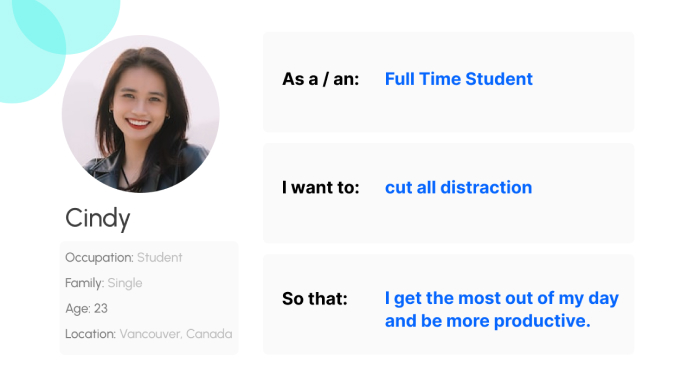
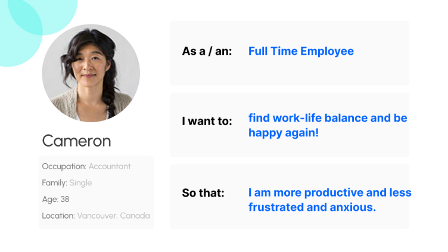

“Mindfulness Stress Reduction” Mobile App
UX / UI Case Study

Role:
- UX Research
- UX / UI Design
- Web Design
Timeline:
- 6 Weeks Duration
- 15 May, 2023-27
- June 2023
Tools
- Photoshop
- Figma
- Google Forms
Overview
Mindfulness Stress Reduction is a blend of meditation, body awareness and mindful movement: learning through practice and study how your body handles the stress. In this full of distraction world, we need to find our inner peace and happiness!
Stress has become a common issue in today's fast-paced and demanding world, leading to various physical and mental health problems. Mindfulness practices have been proven to be effective in reducing stress, anxiety, and improving overall well-being. With this app, I am aiming to support users in their mindfulness journey!
Empathize
EMPATHIZE
The Problem:
We live in a noisy and hectic world, full of distraction. To find our inner peace and balance, we need to learn to meditate and be present. It happens to everyone once in a while to be depressed or feel overwhelmed. Being able to manage the stress and cut distractions is vital for increasing productivity at workplace and with achieving our personal goals.
The Solution:
With Mindfulness Stress Reduction App, I am aiming to support every user to improve their abilities of coping with stress, pain and problems in every day life, learn to breath deeply, meditate, deal with disturbing events and be fully present and alive in this moment. Research shows that mindfulness training can have significant therapeutic benefits for those experiencing stress, anxiety, high blood pressure, depression, heart disease, diabetes and other ailments.
Brainstroming Process:
During the brainstorming phase, I compiled a wholesome business idea. I have conducted market and competitor research by comparing four of the biggest Mindfulness apps like InsightTimer, HeadSpace, Calm and Meditopia. I have also identified user and business goals, and completed interviews with 9 personas, to gain valuable insights.

Define
Research:
My next step was to define user and business goals.
User Goals:
- Main User Goals is to overcome stress through a user-friendly app.
- Practicing guided meditation.
- Improve the quality of sleep, by practicing mindfulness.
- Increasing resilience and the ability to cope with the life’s challenges effectively.
- Improved focus and concentration. Be present, in the moment.
- Stress Reduction and cultivating a sense of calm and relaxation.
- Reducing the symptoms of depression.
- Progress tracking and report to keep users motivated and consistent.
Business Goals:
- Make the product unique as possible in order to stand out from competitors.
- Including external experts, yoga and Pilates teachers, coaches and psychologists.
- Provide data to provide effectiveness of the application.
- Leave a positive impact on users mental health and well-being.
- Establishing strong brand presence.
- Partnership and collaboration with other experts and influencers.

Scenario:
Cindy is a full time student with New Media Design and Web Development with BCIT and often feels very depressed due to the workload and stressful schedule. She is struggling often from anxiety and sleeping disorder.
After trying different meditation apps, she was always giving up using them, because of lack of consistency and motivation. Finally she found Mindfulness Stress Reduction App and started connecting with other individuals with similar problems. She started connecting with them on a daily basis, before her classes, and saw tremendous change in her mood and day. For her most important was to connect with teachers and community with the same issue, so she felt that she is not alone in this. Having the sense of belonging is quite important in order to feel part of the community.
Competitor Analysis:
As part of the Competitive Analysis., I conducted an analysis of four different “Mindfulness” apps – InsightTimer, HeadSpace, Calm, Meditopia. I focused my research on User Interface elements and functionalities, so I was able to identify the areas where they excel or fall short. This gave me an opportunity for differentiation and improvement. After my research, I found that InsightTimer had many functions and was feeling overwhelming for users. Calm by itself was not user-friendly, and users might feel lost while using it. Meditopia had overloaded structure. In light of these findings, I was driven to develop a more user-friendly, intuitive, and personalized meditation app. This app would cater to individual user preferences and moods, providing an effortless and enjoyable mindfulness experience.

Interview Guide:
I have interviewed 9 people from different demographics, asking them the same questions. After the interviews, I analyzed the responses to identify common themes, pain points, and opportunities for improvement. This data helped me to inform the development and refinement of the app strategy. The goal was to clearly identify user goals and frustrations, and according to that I have created a user journey map.

.jpg)
Persona:
To further understand the mindfulness app target audience, I have developed personas. This allowed me to design features, content, and experiences that cater specifically to their needs, preferences, and pain points.
.jpg)
User Story:

Problem Statement:

Ideate
Brainstorming
Then I moved to User Flow, Brainstorming and Information Architecture.
 1.png)
Card Sorting:
Card Sorting helped me to organize and structure information, such as content or features, in a way that aligns with user’s mental model and expectations. In the context of a Mindfulness Stress Reduction App, I used the card sorting to help me determine how to categorize and organize various features, meditation sessions, and content within the app.

Site Map :
Site Map helped me to visualize the basic structure of mindfulness app, covering features like guided practices, meditation timers, mindfulness courses, progress tracking, and community engagement.

Design System:
I came up with a design system to add consistency, structure and communication. I chose Poppins and DM Sans Font typeface. Poppins is a clean typeface, memorable and unique. DM Sans is mostly used for digital and print applications. It is designed to be a web-safe and screen-first font, making it particularly suitable for web design. DM Sans is open source, which means it can be freely used, modified and distributed, making it a popular choice among the web designers and developers.

My choice for colors is a combination of bright green, bright blue and bright pink color. This combination is great for increasing user’s attention of details. Blue symbolizes strength and masculinity, pink symbolizes lust and desire. Bright green from the other hand symbolizes rebirth and tranquility, all colors necessary for being in the right space.

Prototype
Sketch:
I sketched 16 mob app pages for MSRA.


Lo -Fi Wireframing:
The next steps were to do a lo-fi sketch using new user-flow I created. Here quickly I incorporated my brainstorming ideas into rough sketches and outlined the different “Mindfulness Stress Reduction app” screens.

Hi-Fi Wireframing:
I integrated all the elements from the entire design process to craft an app that exudes warmth, functionality, and approachability. My primary tool for this project was Figma, which I utilized extensively for both creating and collaborating on the user interface design of the "Shut Up" app. In the final stages, I conducted user tests using prototypes through InVision and Figma to gather feedback. Thankfully, the seamless performance of the app meant that no further modifications were necessary.

VALIDATE
User Testing:
In the concluding phase, I conducted a usability test for the app I developed to ensure that users are proficient in navigating the product and its UI elements. I diligently collected their feedback, which was overwhelmingly positive, reflecting their high satisfaction with the overall MSRA experience.
FINAL THOUGHTS:
In my UX research for our stress reduction app, I've gained valuable insights into our users' needs. Through interviews, surveys, and testing, I've identified what causes stress and what users seek in a mindfulness app. I've also created user profiles to make the app more personalized. The key findings show that users value simplicity, diverse content, personalization, and a sense of community within the app. I'm dedicated to continually improving the app, safeguarding user data, and maintaining scientific credibility. Armed with these insights, I'm well-prepared to create an app that empowers users to reduce stress, enhance well-being, and cultivate mindfulness in their daily lives.